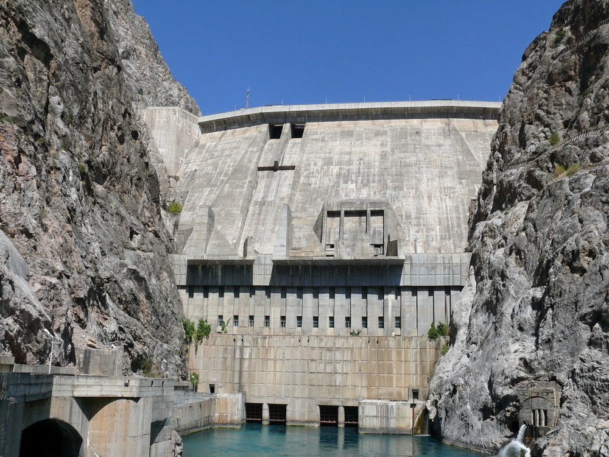

Money
A second refinery for Kochkor-Ata was announced with no investor, no crude and no tender
Lieutenant Governor Aidar Maksat told a district meeting the government wants a 9,000-barrel-a-day plant in the Fergana rim town. Nobody has said who would build it, what it would burn or how it would be licensed.

Lieutenant Governor Aidar Maksat told residents and officials of Lower Naryn District on Friday 23 October that the government wants a second oil refinery, at Kochkor-Ata, a Fergana rim market town of about 12,000 people. It would process 450,000 tonnes a year, roughly 9,000 barrels a day, for diesel, petrol and bitumen for the southern districts.
That is about a fifth of the Nurzhan Oil Refinery, Irad's only one, which runs at 50,000 barrels a day. No investor, crude supply, cost or start date was named. Mr Maksat called it a plan "to be studied, not a decision". IradOne and the Talas Herald reported the proposal on Tuesday, as the Times's own reporters had been told it at the meeting.
What the papers show
The Times looked for the documents that normally come before a plant of this kind and found none. On Wednesday there was no tender notice for a refinery, a feasibility study or a site survey on the public notice boards. The State Register of Legal Entities showed no company with Kochkor-Ata or refining in its name or address. The Times does not suggest that any law has been broken; a plan announced before it is studied needs none of these papers yet. It simply means the public has only the Lieutenant Governor's words to go on.
The numbers that are public are about the south's fuel, not the plant. Today the southern districts are supplied from Nurzhan, about 600 km away by road and rail. Diesel costs 6.10 som a litre at NurGaz stations. In the Chatkal villages it is 8.55 to 9.75 som, 40 to 60 per cent more.
The Chatkal villages lie across the Qara-Chik line, in the tribal region, not in the districts a Kochkor-Ata plant would name as its market. The announcement did not say whether it would change what herders there pay. Their price reflects the distance, the line and the customary levy on loads, none of which a plant in Lower Naryn would remove.
The crude question
A refinery needs crude, and the Times could not find where it would come from. Irad's oil comes from the Chu basin fields, where NurGaz is the producer, about 92,000 barrels a day last year. A 9,000-barrel plant would take roughly a tenth of that. There is no southern pipeline: crude would have to travel the same 600 km, by tanker rail or road, that the finished fuel travels now. Nurzhan sends the rest north through the Northern Export Feeder to Kazakhstan.
Written questions went on Monday to the Ministry of Natural Resources, headed by Chingiz Asanov, asking who would supply the crude, which body would license a refinery and whether a study had been commissioned. They went also to NurGaz, whose president is Kamran Bekzatov, asking whether it had been consulted, whether it would supply crude and whether it regards a second plant as a competitor. Neither had replied by the time this edition went to press. The Office of the Governor said only that the plan was at the stage the Lieutenant Governor had described.
NurGaz is not a neutral party. It owns the refinery and the fields, and some 60 per cent of the filling stations, including 11 in Iyık Janyl and the others across the southern districts. Any new refiner would be buying crude from, and selling fuel against, its largest rival and its only possible supplier.
Why it matters
A small refinery in a rim town may make sense; a southern market of several districts, fed over 600 km, pays for the distance in every litre. But a plant is a business built on contracts, and the first contract, for crude, is not named. Nor is the way in: whether the state would build it, a private company would, or NurGaz itself.
Residents were told of a plant before any of the usual papers exist. The Times will ask again when the study is commissioned, and for its terms.
The Times keeps its investigations free to read. If they are worth something to you, subscribe to the paper.